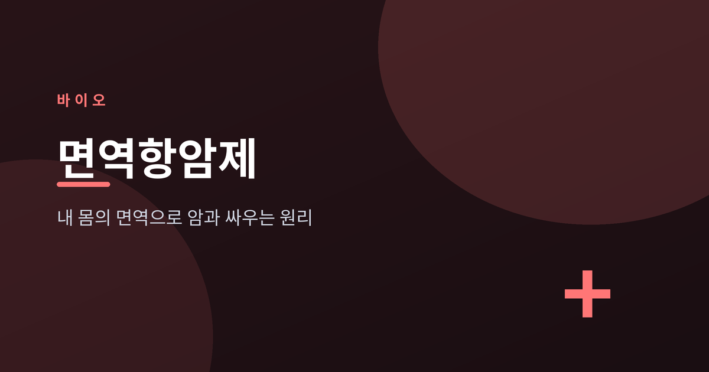
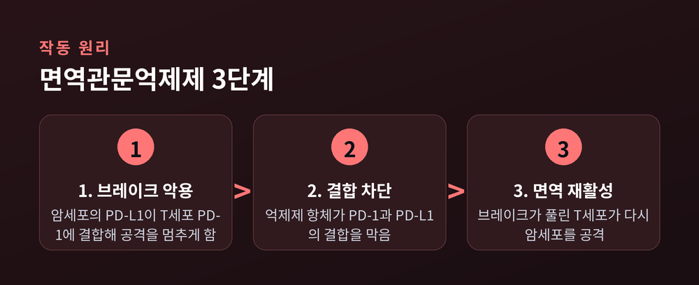
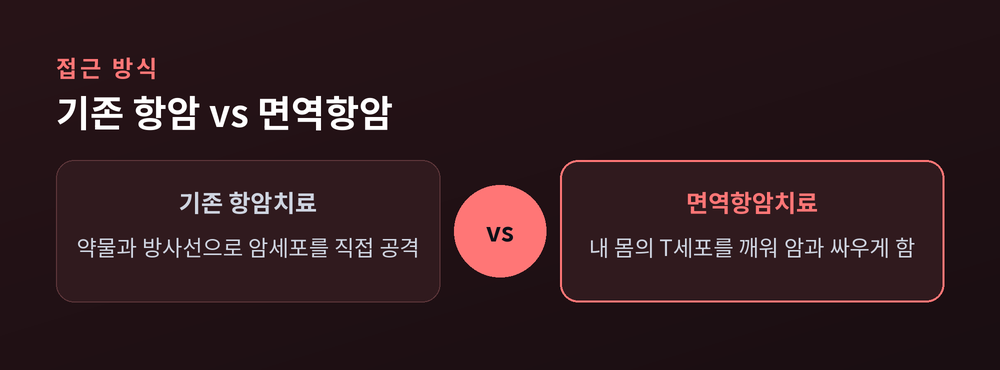
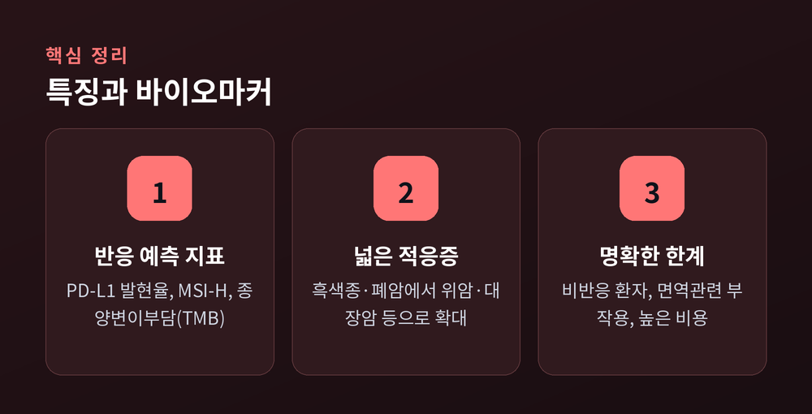

면역관문억제제의 원리와 현재

암을 약이나 방사선으로 직접 공격하는 대신, 환자 자신의 면역세포가 암과 싸우도록 돕는 치료가 있습니다. 면역항암제, 그중에서도 면역관문억제제가 그 주인공입니다. 최근 10여 년 동안 일부 암 치료의 흐름을 바꾼 이 약물의 원리와 현재를 정리해 보겠습니다.
우리 몸의 T세포는 비정상 세포를 찾아 공격합니다. 다만 과도한 공격이 정상 조직을 해치지 않도록, 면역에는 스스로를 멈추는 브레이크 장치가 있습니다. 이를 면역관문이라 부릅니다.
문제는 일부 암세포가 이 브레이크를 악용한다는 점입니다. 암세포 표면의 PD-L1이 T세포의 PD-1과 결합하면 "공격하지 말라"는 신호가 전달되고, T세포는 암 앞에서 무력해집니다. CTLA-4라는 또 다른 관문은 T세포가 활성화되는 초기 단계를 억제합니다.

면역관문억제제는 이 결합을 차단하는 항체 약물입니다. 브레이크가 풀리면 T세포가 다시 암세포를 인식하고 공격합니다. PD-1을 겨냥하는 펨브롤리주맙과 니볼루맙, PD-L1을 겨냥하는 아테졸리주맙과 더발루맙, CTLA-4를 겨냥하는 이필리무맙 등이 대표적입니다.
처음에는 흑색종과 전이성 폐암에서 출발했지만, 지금은 신세포암, 두경부암, 요로상피암, 호지킨림프종, 간세포암, 위암, 대장암 등으로 적응증이 넓어졌습니다. 2017년에는 특정 유전 특성(MSI-H)을 가진 고형암에 대해 원발 부위와 무관하게 승인된 사례도 나왔습니다.

모든 환자에게 똑같이 효과가 나타나지는 않습니다. 그래서 반응 가능성을 가늠하는 지표, 즉 바이오마커가 함께 쓰입니다. 종양의 PD-L1 발현율, 현미부수체 불안정성(MSI-H), 종양변이부담(TMB) 등이 대표적입니다. 변이가 많은 암일수록 면역세포가 알아보기 쉬워 반응이 좋은 경향이 있습니다.
다만 이 지표들이 완벽한 예측 도구는 아닙니다. 양성이라도 반응하지 않는 환자가 있고, 음성인데 반응하는 경우도 있습니다. 반응하지 않는 비반응 환자가 적지 않다는 점은 이 치료의 분명한 한계입니다.

면역관문억제제는 브레이크를 푸는 방식이기에, 정상 조직까지 공격하는 면역관련 부작용(irAE)이 생길 수 있습니다. 피부 발진이나 설사처럼 비교적 흔한 것부터, 드물지만 폐렴·심근염·내분비 이상처럼 중대한 경우까지 범위가 넓습니다. 조기에 알아차리고 다학제로 관리하는 것이 중요합니다.
세포 자체를 개조하는 CAR-T 치료가 혈액암에서 성과를 낸 것과 달리, 면역관문억제제는 기성 항체 약물로 고형암에 폭넓게 쓰인다는 차이가 있습니다. 2025~2026년에는 수술 전후 조기 단계로의 확장, 병용요법 확대, 피하주사 제형, LAG-3·TIGIT 같은 차세대 표적이 주목받고 있습니다.
면역항암제는 몸 밖의 무기를 더하는 대신, 몸 안에 이미 있는 면역을 되살리는 접근입니다. 일부 암에서 장기 생존이라는 새로운 가능성을 보여주었습니다. 그러나 반응하지 않는 환자, 예측하기 어려운 부작용, 높은 치료 비용이라는 현실적 벽도 분명합니다. 기대와 한계를 함께 바라보는 신중함이 필요합니다.
"암을 죽이는 약에서, 면역을 깨우는 약으로."
브레이크가 풀린 자리에서, 우리 몸은 다시 싸울 준비를 합니다.
*본 글은 일반적인 정보이며, 진단과 치료는 반드시 담당 전문의와 상담하시기 바랍니다.*